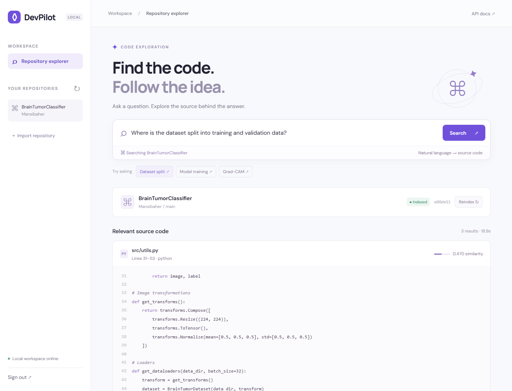

See the working application →Personal project · Local application · M4, September 2026
DevPilot
Find relevant code in GitHub repositories using natural-language questions, with file and line references to explore the source.
My contribution: repository indexing, search backend, and browser workspace.